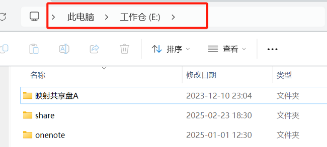
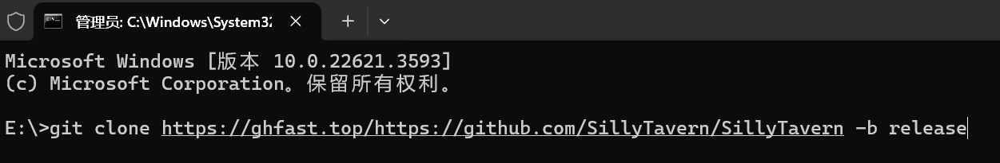
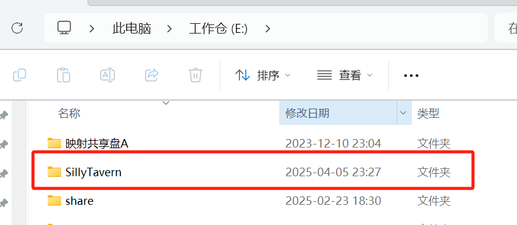
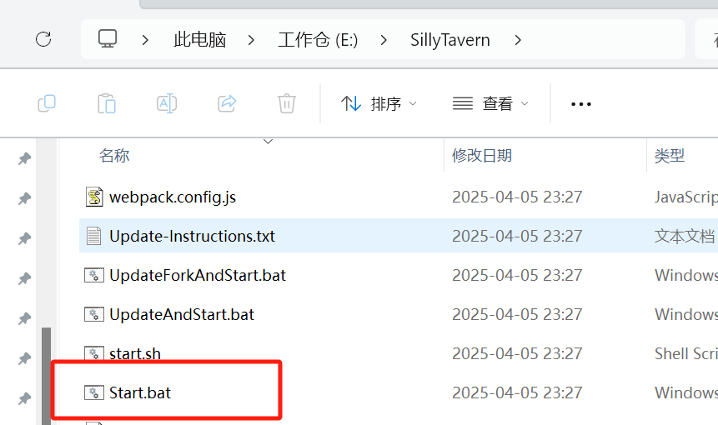
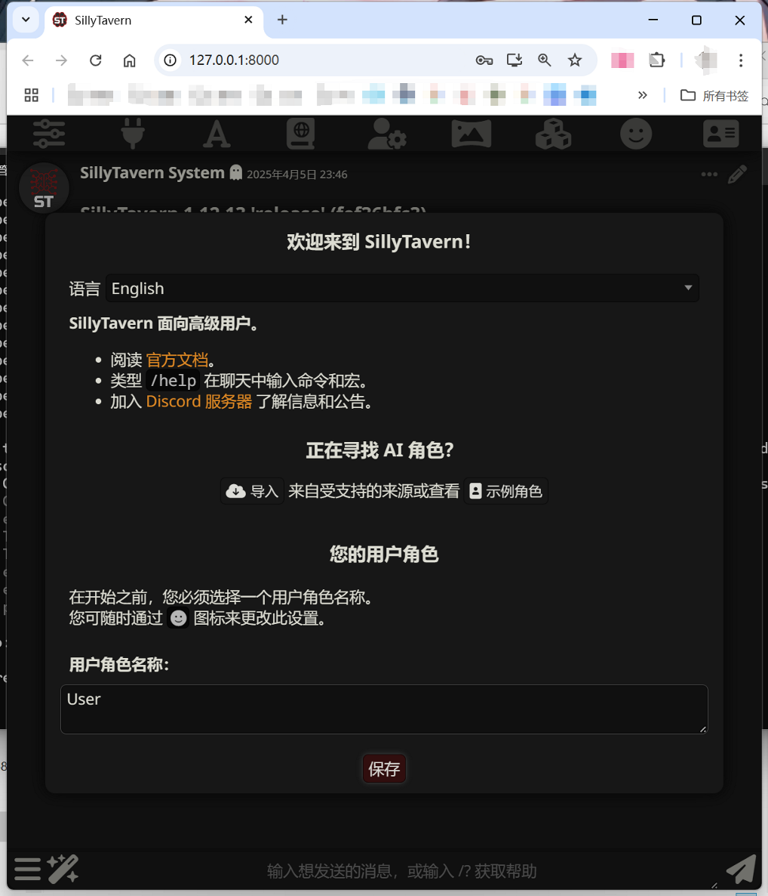
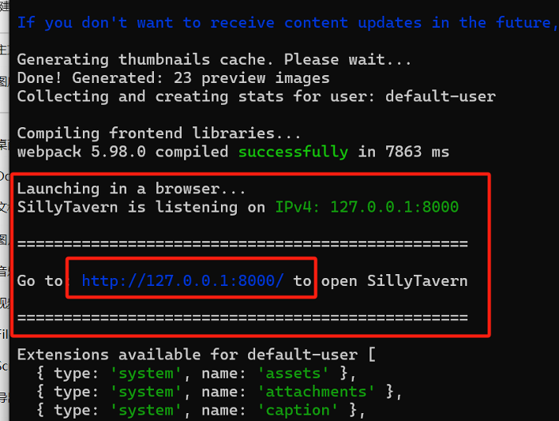

酒馆搭建教程——PC电脑
超低配版本，先跑起来就是赢。AI 用 DeepSeek 就行。
刚入门就先低配一点，玩起来就是赢。觉得酒馆适合自己，再去考虑用手机玩、多设备玩；再考虑扮演效果更好的 AI、各种预设、有游戏界面的复杂角色卡。
01
下载安装 Node.js 和 Git
02
用 Git 下载酒馆
找一个你看着顺眼的文件夹，在地址栏输入 cmd 并回车：
注意：文件夹路径中不可以有中文，否则后面会出问题。

进入命令行界面后，右键粘贴下面这行指令并回车：
git clone https://ghfast.top/https://github.com/SillyTavern/SillyTavern -b release
等待下载完成即可。

03
安装酒馆
刚才的目录会出现一个新的 SillyTavern 文件夹，点进去：

找到 Start.bat，右键 → 以管理员身份运行，会开始自动安装：

一开始可能是个空空的黑框（命令行），等一等就好，过一会浏览器里就会自动弹出安装好的酒馆页面了！

04
启动酒馆
回看刚才的黑框（命令行），往上翻两行，可以看到酒馆已经成功运行的提示。
在浏览器地址栏输入 127.0.0.1:8000 即可手动打开本机酒馆，建议收藏这个页面：

以后每次想玩酒馆，回到文件夹运行 Start.bat，然后浏览器打开 127.0.0.1:8000 就行。
一定要保持黑框不能关闭！这黑框就是酒馆的后台。关闭之后 127.0.0.1:8000 里就什么都没有了。
以后遇到各种乱七八糟的问题，都可以截图黑框里最新的（报错）内容找好心人问，方便有经验的佬辨认问题所在。
以后遇到各种乱七八糟的问题，都可以截图黑框里最新的（报错）内容找好心人问，方便有经验的佬辨认问题所在。
05
更新酒馆
在酒馆文件夹（有 Start.bat 的那个）上方地址栏输入 cmd 并回车，打开命令行。
输入以下命令并回车，即可更新：
git pull